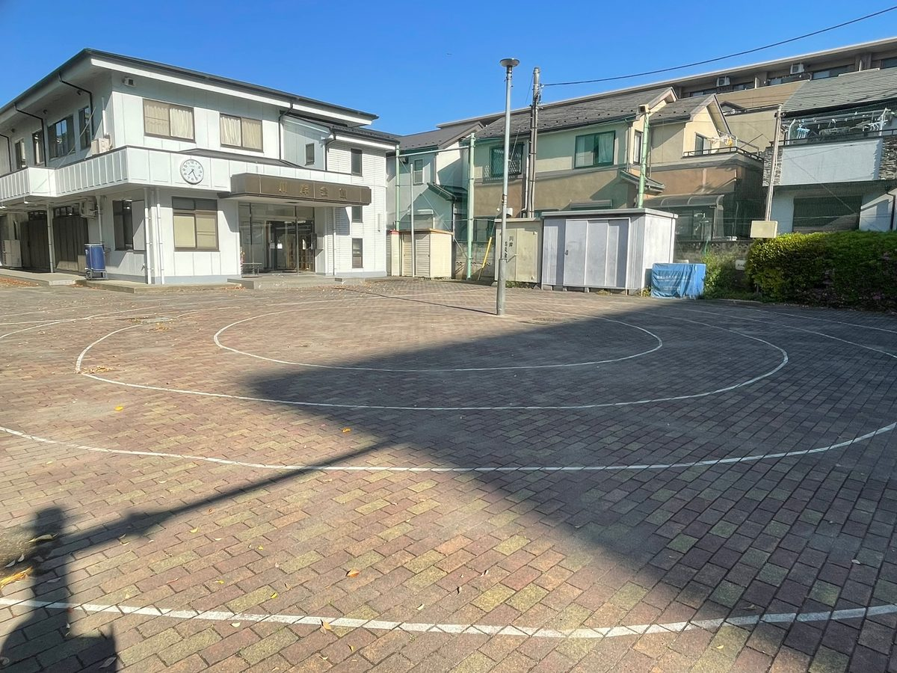
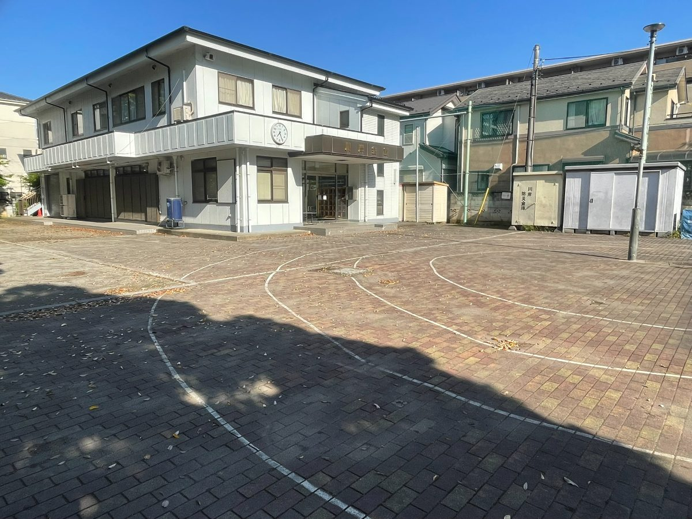
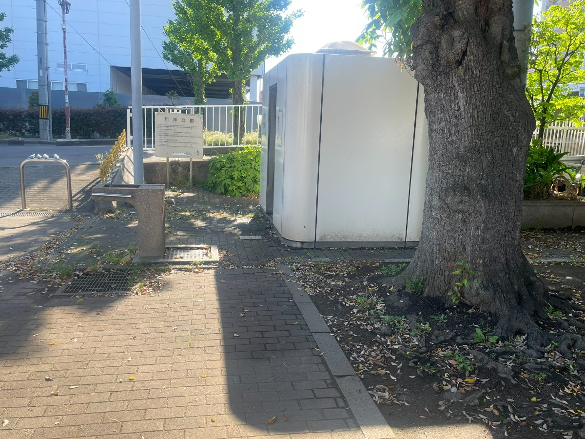
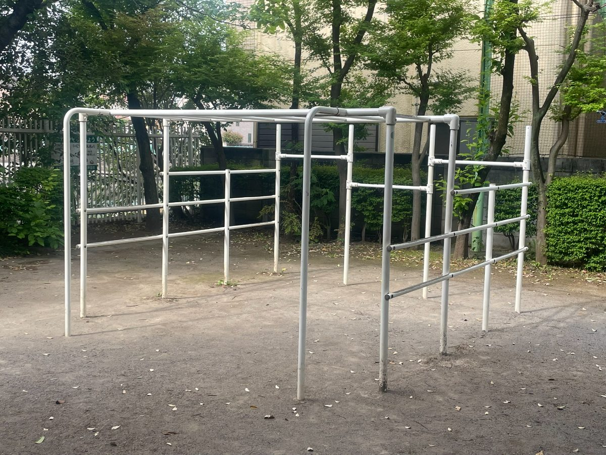
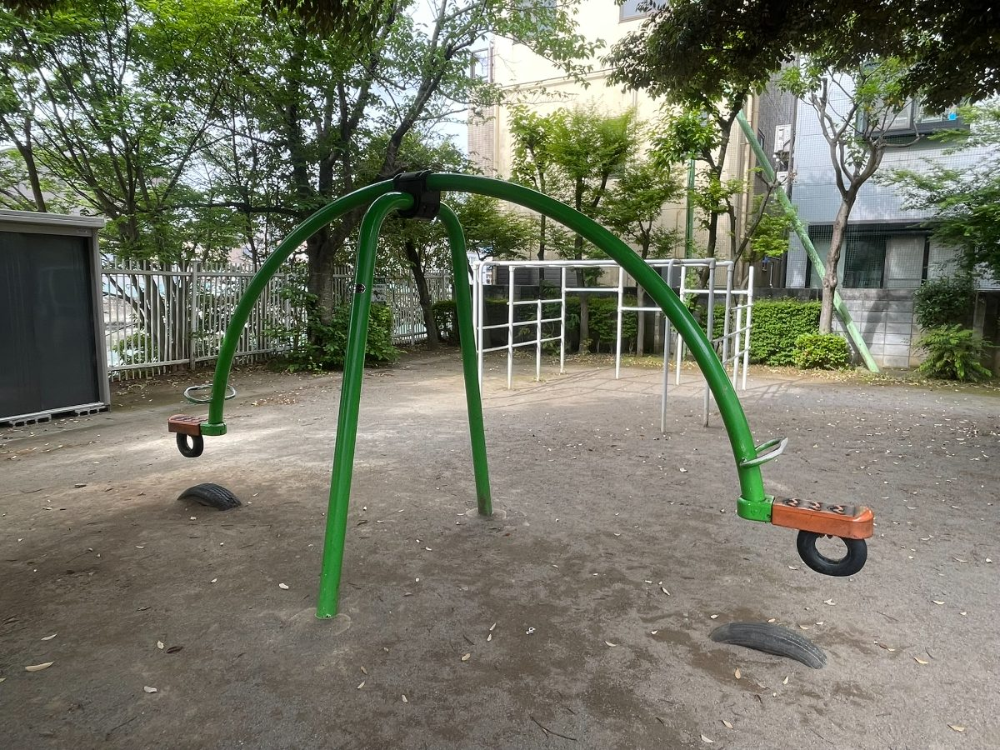
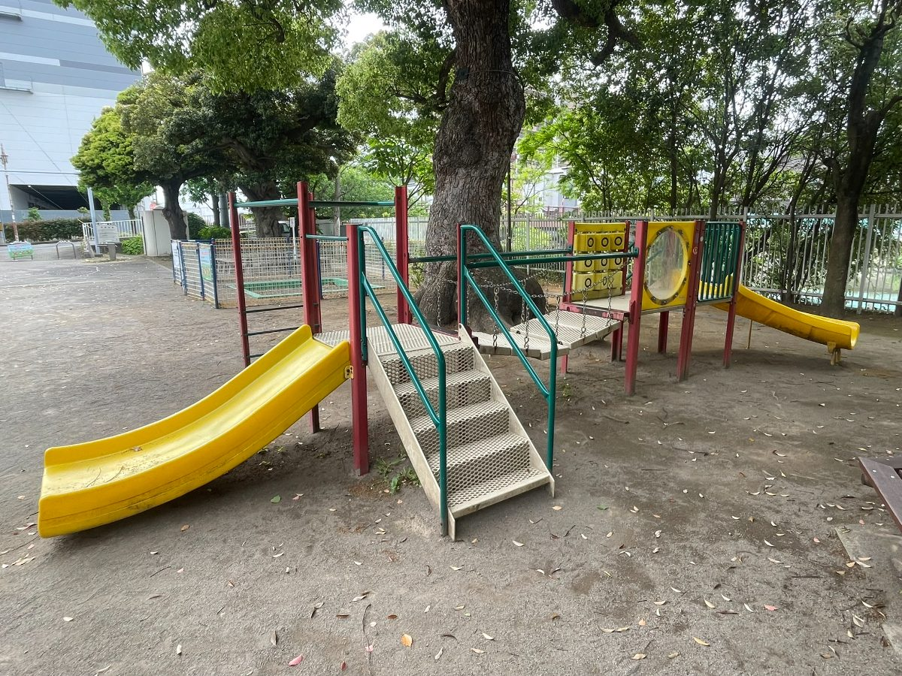
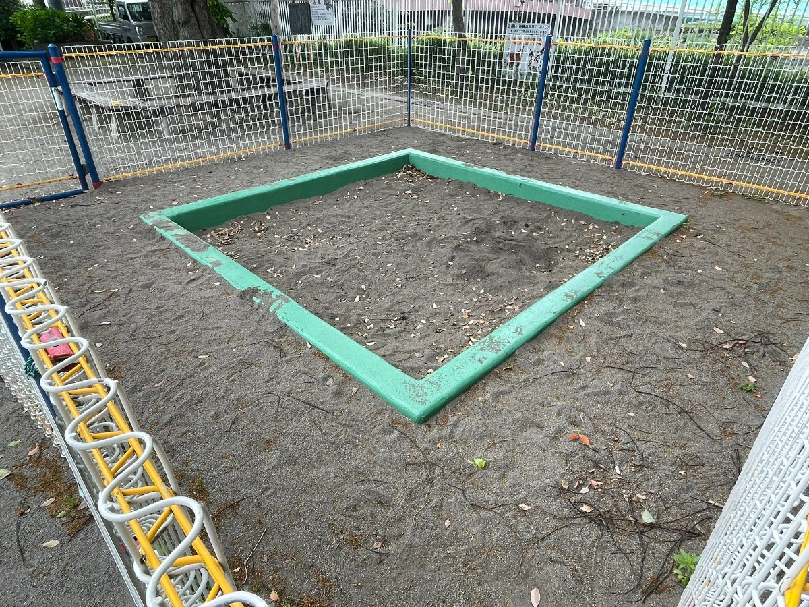
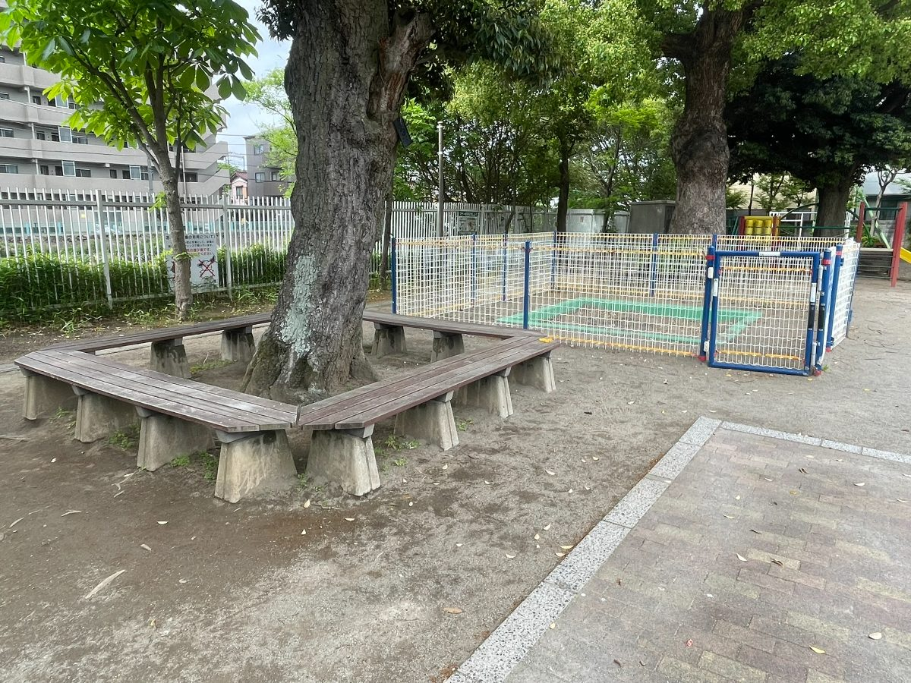
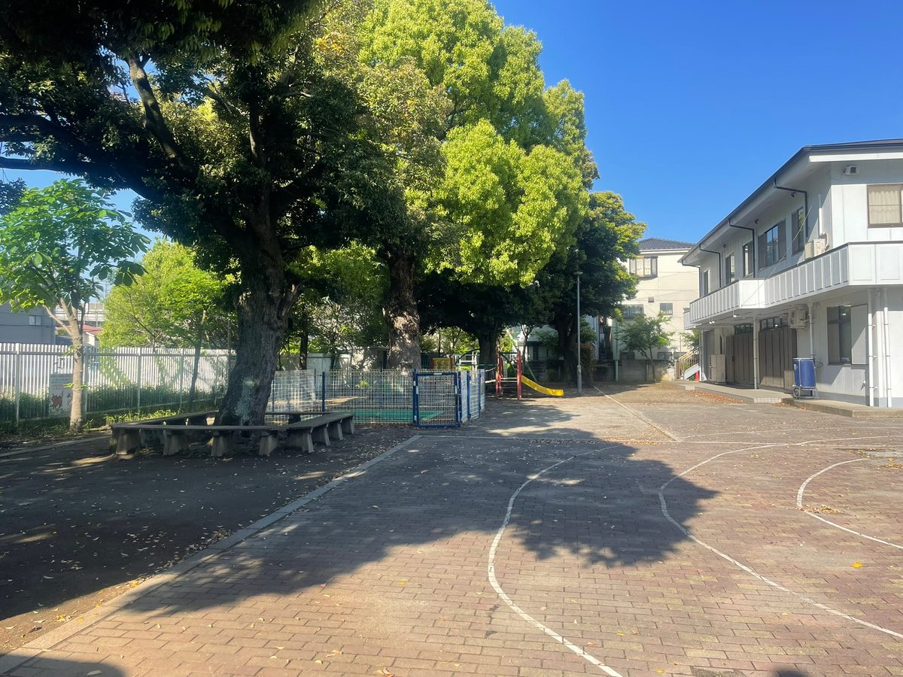

戸田公園エリア
川岸公園
📍 埼玉県戸田市川岸2-11
✨ この公園の特徴
- 黄色いすべり台＆複合遊具で小さな子も安心
- タイヤブランコ付きのユニークな緑のジャングルジム
- 円形のラインが引かれた広場あり
📷 写真









✕

🎪 設備・施設
🎠 ブランコ
🛝 すべり台
🏖 砂場
🚻 トイレ
💧 水遊び
🏗 複合遊具
🪑 ベンチ
🌳 日陰あり
⛹ ボール遊びOK
🏋 健康器具
🅿 駐車場
🐕 ドッグラン
🌳 公園について
川岸公園には、黄色いすべり台を2基備えた複合遊具やジャングルジム、タイヤブランコが付いた緑色のアーチ型遊具など、子どもが思い切り体を動かせる遊具が充実しています。フェンスで囲まれた砂場もあり、小さなお子さまでも安心して遊べる環境が整っています。
広場には円形のラインが描かれたレンガ調の舗装エリアがあり、小学生以上の子どもたちがスポーツを楽しむにも適しています。大きな木々が日陰をつくり、木を囲むように設置されたベンチで保護者もゆっくり休むことができます。
公園内には公衆トイレも設置されており、長時間の滞在でも安心です。川岸会館も隣接しており、地域に根ざした公園として整備されています。
🗺 アクセス
🗺 Googleマップで経路を調べるℹ️ 基本情報
| 公園名 | 川岸公園 |
| 住所 | 埼玉県戸田市川岸2-11 |
| エリア | 戸田公園エリア |
🌿 同じエリアの公園
ページ更新日：2026/07/26
← 公園一覧に戻る